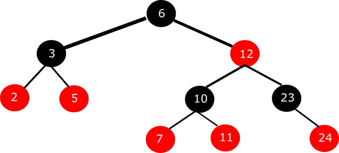
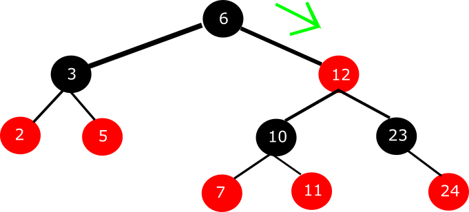
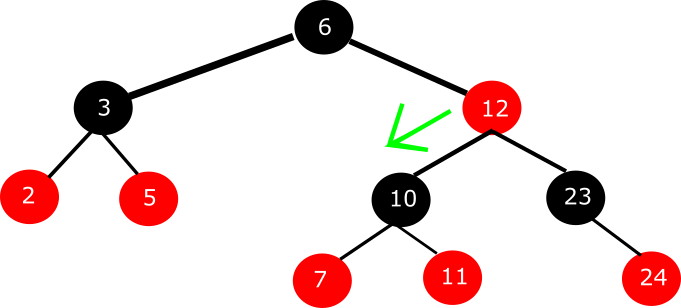
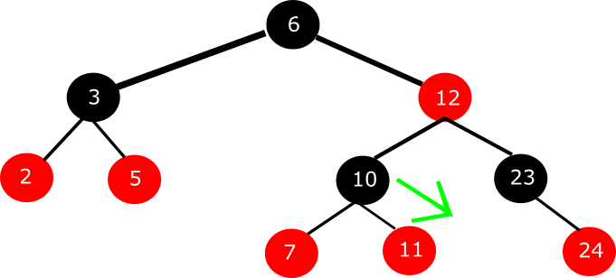
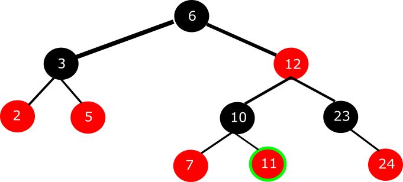
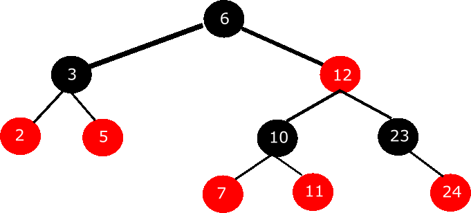
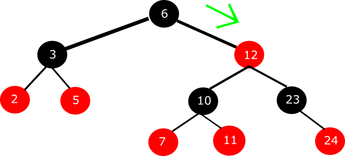
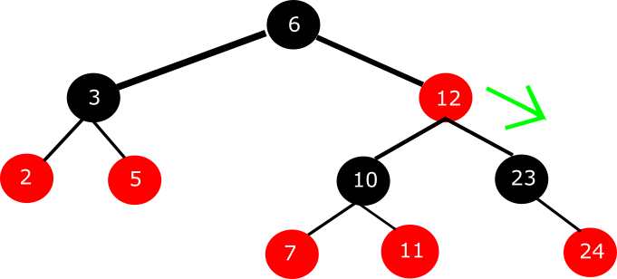
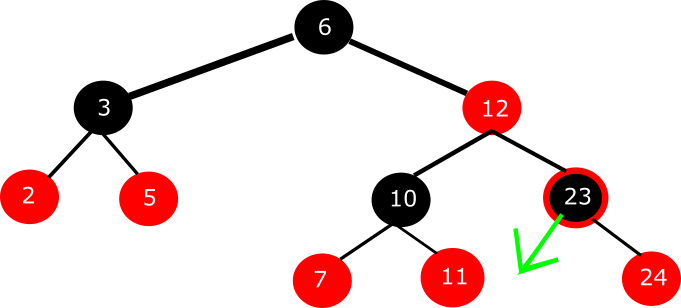
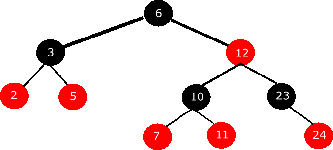

Wyszukiwanie węzła o zadanym kluczu
Jeśli chodzi o wyszukiwanie węzła o zadanym kluczu, to przebiega ono dokładnie tak samo, jak w BST.
Krótkie przypomnienie...
Spis treści (kliknij, by nie scrollować ;]):
Przypadek pozytywny - węzeł istnieje
Mamy poniższe RBT:

Chcemy w nim wyszukać węzła o kluczu "11". My widzmy, że istnieje taki węzeł. Komputer musi wykonać następujący ciąg instrukcji:
- Jesteśmy w węźle o kluczu "6". Czy jest to węzeł o kluczu "11"? Nie
- Podejmuje decyzję, gdzie iść. 11 < 6? Nie. 11 > 6? Tak, idziemy w prawo.

- Jesteśmy w węźle o kluczu "12". Czy jest to węzeł o kluczu "11"? Nie
- Podejmuje decyzję, gdzie iść. 11 < 12? Tak. Tak, idziemy w lewo.

- Jesteśmy w węźle o kluczu "10". Czy jest to węzeł o kluczu "11"? Nie
- Podejmuje decyzję, gdzie iść. 11 < 10? Nie. 11 > 10? Tak, idziemy w prawo.

- Jesteśmy w węźle o kluczu "11". Czy jest to węzeł o kluczu "11"? Tak :) Kończymy procedurę

Małe podsumowanie całości:

Przypadek negatywny - węzeł nie istnieje
Korzystamy z tego samego drzewka. Chcemy w nim wyszukać węzła o kluczu "22". Tym razem widzmy, że nie istnieje taki węzeł.
Rozpoczynamy procedurę przeszukiwania:
- Jesteśmy w węźle o kluczu "6". Czy jest to węzeł o kluczu "22"? Nie
- Podejmuje decyzję, gdzie iść. 22 < 6? Nie. 22 > 6? Tak, idziemy w prawo.

- Jesteśmy w węźle o kluczu "12". Czy jest to węzeł o kluczu "22"? Nie
- Podejmuje decyzję, gdzie iść. 22 < 12? Nie. 22 > 12? Tak, idziemy w prawo.

- Jesteśmy w węźle o kluczu "23". Czy jest to węzeł o kluczu "22"? Nie
- Podejmuje decyzję, gdzie iść. 22 < 23? Tak, powinniśmy iść w lewo, ale sprawdzamy, że jest tam tylko czarny liść,
zatem kończymy poszukiwania węzła o kluczu "23" z wynikiem negatywnym.

Całość przedstawia się w następujący sposób:

Powrót do góry